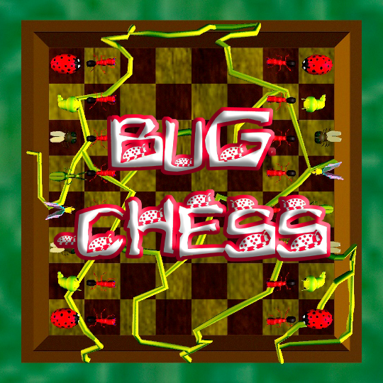
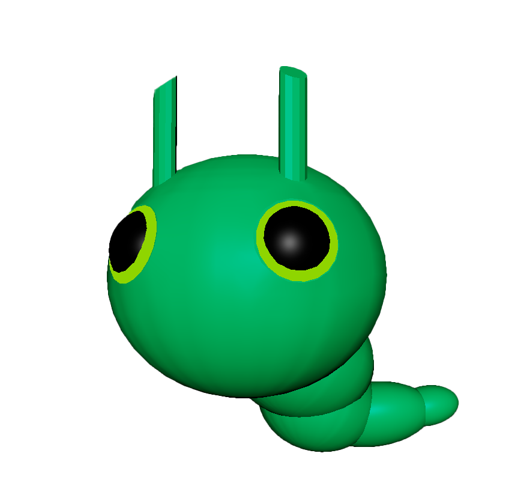

BugChess
BugChess
. . . . . . . . . . . . . . . . . . . . . . . . . . . . . . . . chess... but with bugs . . . . . . . . . . . . . . . . . . . . . . . . . . . . . .
How do you combine a love of bugs with a love of chess? Bug chess. Heavily inspired by video games like Ape Escape, Gex, and Croc, Bug Chess gave me a change to experiment with new 3D modeling techniques and attributes to try to achieve classic/old-school video game shading.
This project will continue to be updated as I work on the game. It is currently in development, and will be available on itch.io in Fall 2025.
The models were created using Autodesk Maya, June-July 2025.

bug chess logo & board model // 2025
